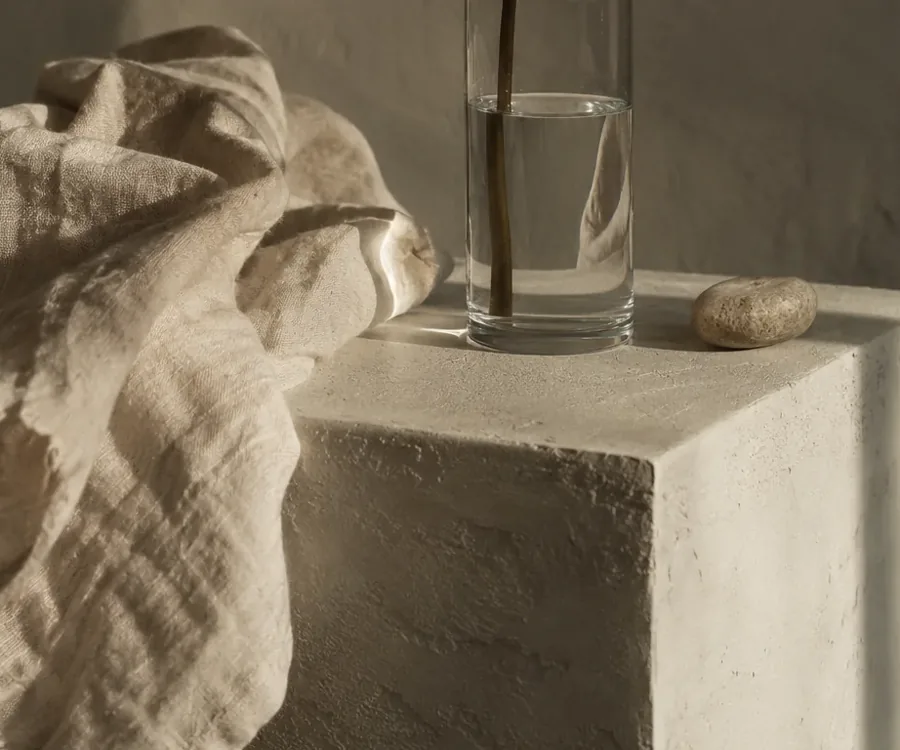

PLAIN SIGHT / STUDIES 01–03
The ordinary,
observed differently.

People, objects, rooms. Five source images and a new way of looking at what they contain.
Explore the studies ↗Self-directed studio concept by Jocelyn Martinez. AI-generated source imagery. No messages were sent.